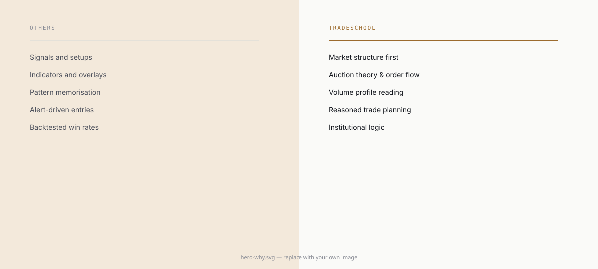

Why we're different
You've seen the shape of the problem and the shape of the numbers. This is the actual reasoning behind how TradeSchool is built, not just what's different, but why each difference exists.

The question we want you to ask
Before you learn another indicator, strategy, or setup, ask yourself who is moving this market, why they might be doing it, and what evidence you have for either answer.
That question changes everything downstream of it. A chart is not a collection of candles. A candle is not a signal. Volume climbing doesn't automatically mean buying, and rising open interest doesn't automatically mean anyone is bullish. An indicator isn't the market itself, only a mathematical description of a small slice of it.
The market exists first. The tools we use to look at it come later. TradeSchool starts with the market itself and works outward from there.
The uncomfortable truth about market education
Most people's introduction to trading follows a familiar arc. A colorful chart convinces them the market moves in patterns. A new indicator convinces them it will tell them when to buy. An entry, a stop loss, and a target convince them trading is a repeatable formula. Profit screenshots from other traders convince them everyone else is already doing this successfully. A backtest convinces them the edge is proven. A named strategy convinces them they now own a system. A handful of winning trades convinces them the result is reproducible.
None of that is malicious. It's just incomplete. A professional market participant eventually stops asking what to do and starts asking a different set of questions.
| Why did this move happen? | Direction needs a reason, not just a shape on a chart |
| Who participated in it? | Different participants have different objectives |
| Where was value accepted? | Price alone doesn't tell you what the market considers fair |
| Who ended up trapped? | Bad positioning creates pressure that shows up later |
| Where does liquidity exist? | Execution happens where counterparties are willing to trade |
| Was this initiative or responsive activity? | Not every breakout means the same thing |
| What changed? | A thesis has to respond to new information, not sit still |
| What would prove this interpretation wrong? | An analysis that can't be falsified isn't really an analysis |
The difference, in one line: a strategy tells you what to do. Education teaches you why the market puts you in that situation to begin with.
Our core belief
A trader shouldn't become dependent on a strategy. A trader should become independent of strategies altogether, and the gap between those two outcomes is bigger than it sounds.
Strategy dependency looks like signal, entry, stop, target, repeat, and it works fine until the market changes character, at which point it produces confusion, because the trader never understood why the rules worked in the first place. Market intelligence looks like context, participants, value, inventory, auction behavior, order flow, and execution, and when the market changes character, it produces re-evaluation instead, because the trader was never relying on the market staying the same. Building that second kind of trader is the actual goal of this program.
What we don't start with
Most retail trading education starts with indicators, candlestick patterns, buy and sell signals, fixed strategy rules, and profit screenshots as proof of concept. We start somewhere else.
| Indicators | Market mechanics |
| Candlestick patterns | Auction behavior |
| Buy and sell signals | Participants and their objectives |
| Strategy rules | Market reasoning |
| Fixed setups | Conditional thinking |
| Profit screenshots | Evidence |
| Prediction | Hypothesis |
| Accuracy | Decision quality |
| A single timeframe | Multi-timeframe context |
| Tool dependency | Intellectual independence |
None of this means indicators, patterns, or strategies are useless. It means they should never substitute for understanding the market underneath them.
On that note, we want to be precise rather than vague about something: there's no credible basis for claiming every indicator or retail strategy was deliberately built by institutions to trap retail traders. That would be an overstatement, and we're not interested in selling a conspiracy any more than we're interested in selling certainty. The more accurate, less dramatic reality is that the market exists independently of whatever tools get layered onto a chart. An indicator is a mathematical transformation of market data. A strategy is a set of rules applied to observations. Neither one is the market itself. So the approach stays simple: understand the underlying auction first, use tools only when they genuinely improve observation or execution, and never confuse the tool with the thing it measures.
Same signal, two traders
Imagine two traders receive the exact same signal. The first sees an indicator flash "buy" and takes it at face value. The second sees the same flash but reads it differently: price has returned to an area the market previously accepted, the broader auction looks balanced, the current move is showing responsive rather than initiative behavior, and order flow is being absorbed rather than driving through. Their working hypothesis is that the auction may rotate back toward value, unless acceptance develops beyond this area first.
Both traders might press buy. Only one of them understands why the trade exists, and that difference becomes the entire ballgame the moment the market stops behaving like the textbook example.
Why one mentor, not a batch
A group classroom can transmit information reasonably well. It's much worse at challenging how someone thinks, and thinking is the part that determines whether a trader survives.
In an individual session, a student observes something, explains it, gets challenged on the explanation, rethinks it, explains it again, applies it, and reviews the result. That loop is where a mentor catches things a recorded video never will: hidden assumptions, mechanical rule-following standing in for real understanding, confirmation bias, overconfidence after a lucky run, weak reasoning dressed up as a plausible-sounding thesis, dependency on a pattern rather than the logic behind it, an inability to separate fact from hypothesis, or risk logic that only sounds right until it gets tested.
Why we keep this deliberately small
This model exists because of a choice, not a limitation. We are not running TradeSchool primarily to collect fees from as many students as we can enroll. We're running it to give people real, individual education in a market where that's genuinely rare, and we think of that as an ethical position as much as a business one.
We believe in quality over quantity, which is why seats stay limited on purpose. A high-volume education business is optimized for more admissions, more batches, more content, and more students. Ours is optimized for better understanding, better reasoning, and better independence. Standardized delivery gets replaced with individual diagnosis. Finishing the course gets replaced with continuing until competence is genuinely there. Information transfer gets replaced with skill development, and strategy adoption gets replaced with real market understanding. Quality over quantity isn't a slogan here. It's a constraint we've chosen to accept on purpose, even though it makes this a harder business to run than the alternative.
We're not trying to become the biggest stock market training institute in the country. We're trying to build something harder: a small number of people who can genuinely think for themselves in the market. One trader who has been trained to think independently is worth more than a hundred who are permanently searching for the next signal to follow.
Our promise to you
We won't promise you certainty. What we will give you is a framework for thinking clearly when certainty isn't available. We won't promise you profits either, but we will teach you to understand risk, market behavior, and decision quality well enough to make your own calls.
There's no magic setup coming from us, only real teaching in how setups emerge from market conditions in the first place. We're not interested in making you permanently dependent on our signals; our interest is in making you capable of analyzing the market yourself. And we won't teach you to worship any tool, only to understand precisely what it measures and where its limits sit.